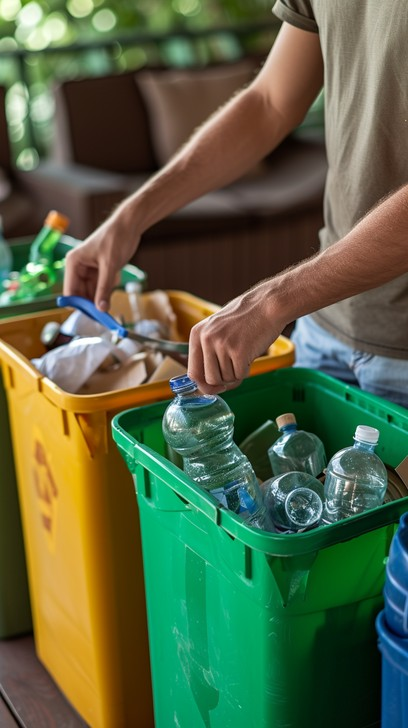

A Caça ao Tesouro da Natureza

Introdução
Esta é uma das atividades mais divertidas para os Juniores! A natureza está cheia de tesouros escondidos e cabe a cada equipa descobri-los.
Cada equipa recebe uma folha com desafios. Basta explorar o espaço à vossa volta, observar com atenção e descobrir tudo o que a lista pede.
Podem registar cada descoberta com uma fotografia ou simplesmente com um desenho. O mais importante é olhar, escutar e aprender.
A folha de desafios
Descobre tudo o que a tua equipa precisa de encontrar.
Regra de ouro
Não podem destruir, arrancar ou matar nada. Observamos, registamos e deixamos tudo como encontrámos.
O desafio final
Chegou o momento de pensar no que realmente importa.
“Encontrem 5 coisas da natureza que podemos proteger.”
Cada equipa escolhe as suas cinco descobertas.Final
Todos juntos para uma grande promessa.
A natureza que o Junior promete proteger
Todos fazem, em conjunto, um grande cartaz. Cada Junior deixa a sua marca, para mostrar que faz parte desta promessa.